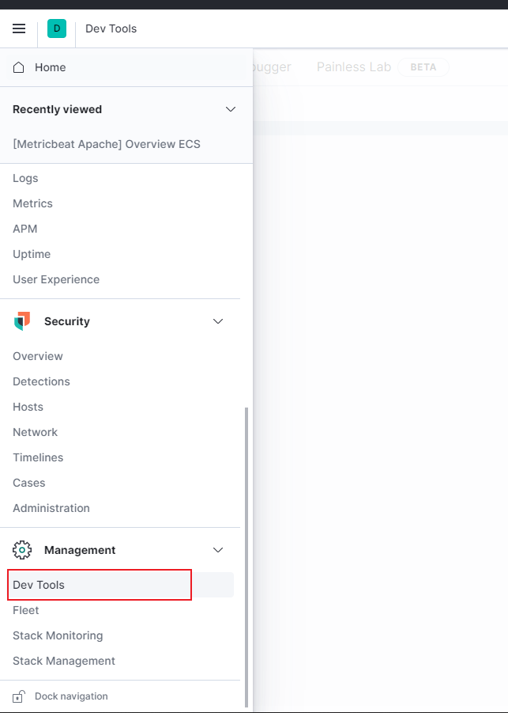
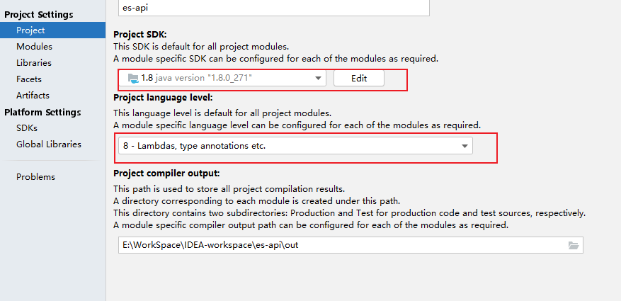
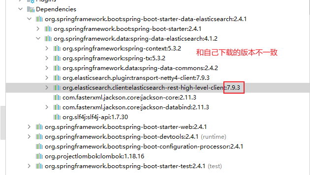
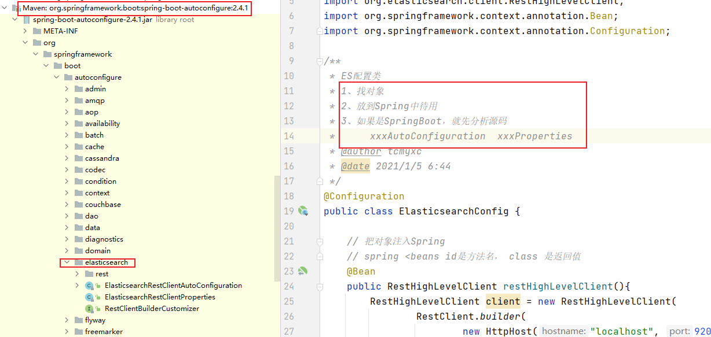
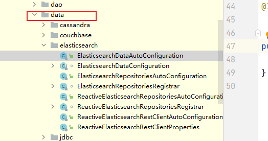

Elasticsearch¶
百度百科：
是一个基于Lucene的搜索服务器。提供了一个分布式多用户能力的全文搜索引擎，基于RESTful web接口。
是一种流行的企业级搜索引擎。用于云计算，能够达到实时搜索，稳定，可靠，快速，安装使用方便。
与名为Logstash的数据收集和日志解析引擎以及名为Kibana的分析和可视化平台一起开发。这三个产品被设计成一个集成解决方案，称为“Elastic Stack”
支持实时GET请求，适合作为NoSQL数据存储，但缺少分布式事务
写入和查询对资源的消耗都很大，如何合理有效地控制资源，既能满足写入和查询的需求，又能满足资源充分利用，这个问题需要考虑
官方介绍：
Elasticsearch 是一个分布式的开源搜索和分析引擎，适用于所有类型的数据，包括文本、数字、地理空间、结构化和非结构化数据。Elasticsearch 在 Apache Lucene 的基础上开发而成，由 Elasticsearch N.V.（即现在的 Elastic）于 2010 年首次发布。Elasticsearch 以其简单的 REST 风格 API、分布式特性、速度和可扩展性而闻名，是 Elastic Stack 的核心组件；Elastic Stack 是适用于数据采集、充实、存储、分析和可视化的一组开源工具。人们通常将 Elastic Stack 称为 ELK Stack（代指 Elasticsearch、Logstash 和 Kibana），目前 Elastic Stack 包括一系列丰富的轻量型数据采集代理，这些代理统称为 Beats，可用来向 Elasticsearch 发送数据。
分布式、高扩展、高实时的搜索与数据分析引擎

实现原理¶
1、将数据提交到Elasticsearch 数据库中
2、通过分词控制器去将对应的语句分词，将其权重和分词结果一并存入数据
3、当用户搜索数据时候，再根据权重将结果排名，打分，再将返回结果呈现给用户
Solr是一个高性能，采用Java开发，基于Lucene的全文搜索服务器。同时对其进行了扩展，提供了比Lucene更为丰富的查询语言，同时实现了可配置、可扩展并对查询性能进行了优化，并且提供了一个完善的功能管理界面，是一款非常优秀的全文搜索引擎。
主要特性包括：高效、灵活的缓存功能，垂直搜索功能，高亮显示搜索结果，通过索引复制来提高可用性，提供一套强大Data Schema来定义字段，类型和设置文本分析，提供基于Web的管理界面等。
ES和solr的差别¶
1、当单纯对已有数据进行检索，solr更快；ES建索引快，可用于实时查询
2、当实时建立索引的时候，solr会IO阻塞，查询性能较差，ES这时候优势明显
3、随着数据量的增加，solr的搜索效率会变得更低，es基本无变化
4、solr利用zookeeper进行分布式管理，ES自带分布式协调功能
安装¶

bin 启动文件
config 配置文件
log4j2 日志配置文件
jvm.options jvm相关配置
elasticsearch.yml es配置文件
lib 相关jar包
modules 功能模块
plugins 插件
localhost:9200
可视化插件：head（需要解决跨域问题）
head安装¶
1、下载解压
2、
npm install
npm run start
3、解决跨域访问问题
#es配置文件中修改
#开启跨域
http.cors.enabled: true
#允许所有人访问
http.cors.allow-origin: "*"
4、127.0.0.1:9100
中文网址：http://127.0.0.1:9100/?lang=zh

head当做数据展示工具。查询用Kibana
Kibana（port: 5601)¶
Kibana 是一个为 Logstash 和 ElasticSearch 提供的日志分析的 Web 接口。可使用它对日志进行高效的搜索、可视化、分析等各种操作。
版本要和ES一致
我们使用Kibana开发工具进行数据操作

汉化¶
Kibana配置文件
i18n.locale: "zh-CN"
基本概念¶
1、Node 与 Cluster¶
Elastic 本质上是一个分布式数据库，允许多台服务器协同工作，每台服务器可以运行多个 Elastic 实例。
单个 Elastic 实例称为一个节点（node）。一组节点构成一个集群（cluster）。
2、 Index¶
Elastic 会索引所有字段，经过处理后写入一个反向索引（Inverted Index）。查找数据的时候，直接查找该索引。
所以，Elastic 数据管理的顶层单位就叫做 Index（索引）。它是单个数据库的同义词。每个 Index （即数据库）的名字必须是小写。
查看当前节点的所有 Index
http://localhost:9200/_cat/indices?v

3、Document¶
Index 里面单条的记录称为 Document（文档）。许多条 Document 构成了一个 Index。
Document 使用 JSON 格式表示，下面是一个例子。
json
{
"user": "张三",
"title": "工程师",
"desc": "数据库管理"
}
同一个 Index 里面的 Document，不要求有相同的结构（scheme），但是最好保持相同，这样有利于提高搜索效率。
4、Type（移除）¶
Document 可以分组，比如weather这个 Index 里面，可以按城市分组（北京和上海），也可以按气候分组（晴天和雨天）。这种分组就叫做 Type，它是虚拟的逻辑分组，用来过滤 Document。
不同的 Type 应该有相似的结构（schema），举例来说，id字段不能在这个组是字符串，在另一个组是数值。这是与关系型数据库的表的一个区别。性质完全不同的数据（比如products和logs）应该存成两个 Index，而不是一个 Index 里面的两个 Type（虽然可以做到）。
列出每个 Index 所包含的 Type。
bash
localhost:9200/_mapping?pretty=true
根据规划，Elastic 6.x 版只允许每个 Index 包含一个 Type，7.x 版将会彻底移除 Type。
IK分词器¶
两种分词策略：
- ik_max_word：会将文本做最细粒度的拆分
- ik_smart：会将文本做最粗粒度的拆分
直接放在ES的插件目录下即可，然后重启ES
使用Kibana查看分词结果：


有些词汇被过度拆分，需要我们手动加到词典里面，在配置文件中自己加
REST风格¶
REST即表述性状态传递（英文：Representational State Transfer，简称REST）是Roy Fielding博士在2000年他的博士论文中提出来的一种软件架构风格。它是一种针对网络应用的设计和开发方式，可以降低开发的复杂性，提高系统的可伸缩性。
REST是设计风格而不是标准

1、创建一个索引
PUT /索引/类型名/id
{
请求体
}
SpringBoot¶
1、找官方文档
https://www.elastic.co/guide/en/elasticsearch/client/index.html
2、找依赖
<repositories>
<repository>
<id>es-snapshots</id>
<name>elasticsearch snapshot repo</name>
<url>https://snapshots.elastic.co/maven/</url>
</repository>
</repositories>
3、找对象
高级客户端调低级的，低级的维护线程池
！！！用完一定要关闭
4、分析类中的方法
创建项目
1、创建一个空项目
2、新建一个模块，添加相应的依赖
3、配置JDK的版本



分析

自定义版本依赖，保证和本地一致


<properties>
<java.version>1.8</java.version>
<!--自定义版本依赖，和自己电脑上的一致-->
<elasticsearch.version>7.10.1</elasticsearch.version>
</properties>


具体API测试
官方说明¶
Elasticsearch 的用途是什么？¶
Elasticsearch 在速度和可扩展性方面都表现出色，而且还能够索引多种类型的内容，这意味着其可用于多种用例：
- 应用程序搜索
- 网站搜索
- 企业搜索
- 日志处理和分析
- 基础设施指标和容器监测
- 应用程序性能监测
- 地理空间数据分析和可视化
- 安全分析
- 业务分析
Elasticsearch 的工作原理是什么？¶
原始数据会从多个来源（包括日志、系统指标和网络应用程序）输入到 Elasticsearch 中。数据采集指在 Elasticsearch 中进行索引之前解析、标准化并充实这些原始数据的过程。这些数据在 Elasticsearch 中索引完成之后，用户便可针对他们的数据运行复杂的查询，并使用聚合来检索自身数据的复杂汇总。在 Kibana 中，用户可以基于自己的数据创建强大的可视化，分享仪表板，并对 Elastic Stack 进行管理。
Elasticsearch 索引是什么？¶
Elasticsearch 索引指相互关联的文档集合。Elasticsearch 会以 JSON 文档的形式存储数据。每个文档都会在一组键（字段或属性的名称）和它们对应的值（字符串、数字、布尔值、日期、数值组、地理位置或其他类型的数据）之间建立联系。
Elasticsearch 使用的是一种名为倒排索引的数据结构，这一结构的设计可以允许十分快速地进行全文本搜索。倒排索引会列出在所有文档中出现的每个特有词汇，并且可以找到包含每个词汇的全部文档。
在索引过程中，Elasticsearch 会存储文档并构建倒排索引，这样用户便可以近实时地对文档数据进行搜索。索引过程是在索引 API 中启动的，通过此 API 您既可向特定索引中添加 JSON 文档，也可更改特定索引中的 JSON 文档。
Logstash 的用途是什么？¶
Logstash 是 Elastic Stack 的核心产品之一，可用来对数据进行聚合和处理，并将数据发送到 Elasticsearch。Logstash 是一个开源的服务器端数据处理管道，允许您在将数据索引到 Elasticsearch 之前同时从多个来源采集数据，并对数据进行充实和转换。
Kibana 的用途是什么？¶
Kibana 是一款适用于 Elasticsearch 的数据可视化和管理工具，可以提供实时的直方图、线形图、饼状图和地图。Kibana 同时还包括诸如 Canvas 和 Elastic Maps 等高级应用程序；Canvas 允许用户基于自身数据创建定制的动态信息图表，而 Elastic Maps 则可用来对地理空间数据进行可视化。
为何使用 Elasticsearch？¶
Elasticsearch 很快。 由于 Elasticsearch 是在 Lucene 基础上构建而成的，所以在全文本搜索方面表现十分出色。Elasticsearch 同时还是一个近实时的搜索平台，这意味着从文档索引操作到文档变为可搜索状态之间的延时很短，一般只有一秒。因此，Elasticsearch 非常适用于对时间有严苛要求的用例，例如安全分析和基础设施监测。
Elasticsearch 具有分布式的本质特征。 Elasticsearch 中存储的文档分布在不同的容器中，这些容器称为分片，可以进行复制以提供数据冗余副本，以防发生硬件故障。Elasticsearch 的分布式特性使得它可以扩展至数百台（甚至数千台）服务器，并处理 PB 量级的数据。
Elasticsearch 包含一系列广泛的功能。 除了速度、可扩展性和弹性等优势以外，Elasticsearch 还有大量强大的内置功能（例如数据汇总和索引生命周期管理），可以方便用户更加高效地存储和搜索数据。
Elastic Stack 简化了数据采集、可视化和报告过程。 通过与 Beats 和 Logstash 进行集成，用户能够在向 Elasticsearch 中索引数据之前轻松地处理数据。同时，Kibana 不仅可针对 Elasticsearch 数据提供实时可视化，同时还提供 UI 以便用户快速访问应用程序性能监测 (APM)、日志和基础设施指标等数据。